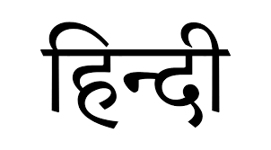

Background
How far can language bend before it breaks? Technically forever. Common consensus is that with language anything can be communicated, so meaning should be consistent among translation. Human sentiment can be one of the most important things with language and we must test whether an LLM can interpret that sentiment. Otherwise, it will fail with repeated translation.
I used some of the most commonly spoken languages in order to favor the GPT as much as possible. In this experiment, I ran several English paragraphs through a language chain using Claude because Anthropic has tested better for language skills:
English → Hindi → Spanish → back to English
My goal was to test prompt chaining across different types of text and see how meaning and nuance is interpreted by LLMs.
Setup
For each test, I used GPT-4o and prompted it to do the following:
Translate the source paragraph from English to Hindi,

then translate that Hindi paragraph to Spanish,
then translate that Spanish back to English.
I conducted these translations separately, by copy and pasting into different prompting chats. This way GPT retained no knowledge between past prompt and did not just recall an earlier prompt. All translations were done separately, in sequence. I also want to be able to see this linguistic drift in 2 different contexts: a very casual conversation as well as a technical conversation. I predict that there will be less drift in a technical conversation because it will rely more on direct word translation.
Technical Script
Original Script
A hash table provides average-case constant-time complexity for insertions and lookups, assuming a good hash function with minimal collisions.
Translated to Hindi
एक हैश टेबल इन्सर्शन और लुकअप के लिए औसत-केस स्थिर-समय जटिलता प्रदान करती है, बशर्ते कि एक अच्छा हैश फंक्शन हो जिसमें न्यूनतम कॉलिजन हों। Transliteration: Ek hash table insertion aur lookup ke liye ausat-case sthir-samay jatilta pradan karti hai, basharte ki ek accha hash function ho jismein nyuntam collision hon.
Translated to Spanish
Una tabla hash proporciona complejidad de tiempo constante en caso promedio para inserción y búsqueda, siempre que tenga una buena función hash con colisiones mínimas.
Translated back to English
A hash table provides constant time complexity on average for insertion and search, as long as it has a good hash function with minimal collisions.
Casual Script
Original Script
Okay but like… if you respond with ‘lol’ one more time, I’m gonna assume you actually hate me and you’re just being polite about it.
Translated to Hindi
“ठीक है लेकिन यार… अगर तुमने एक बार और ‘lol’ से जवाब दिया, तो मैं समझ जाऊंगा कि तुम सच में मुझसे नफरत करते हो और बस शिष्टाचार के लिए बात कर रहे हो।”
Translated to Spanish
“Está bien, pero hermano… si respondes con ‘lol’ una vez más, entenderé que realmente me odias y solo estás hablando por cortesía.”
Translated back to English
“It’s okay, but brother… if you respond with ‘lol’ one more time, I’ll understand that you really hate me and are only talking out of courtesy.”
Takeaways
The hypothesis I posed at the beginning seems fairly accurate. The translation loop gets broken in the casual script because an LLM cannot capture the nuance of language and slang across multiple languages. However, I will note that an LLM performs comparably to Google Translate which is pretty industry leading in free text translation tools. GPT is a solid translator word-for-word, but context and nuance can get scrambled fast. Languages like Hindi and Spanich carry their own cultural assumptions and syntactic structures; LLMs don’t always account for that drift.
Thanks for translating with me, मेरे साथ अनुवाद करने के लिए धन्यवाद, Gracias por traducir conmigo,
Mallika